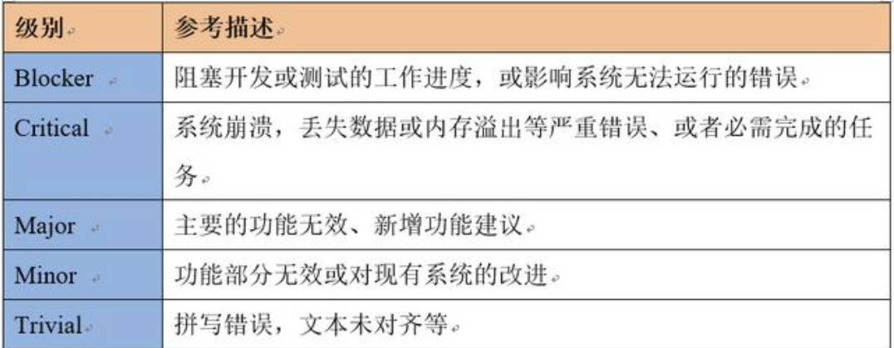
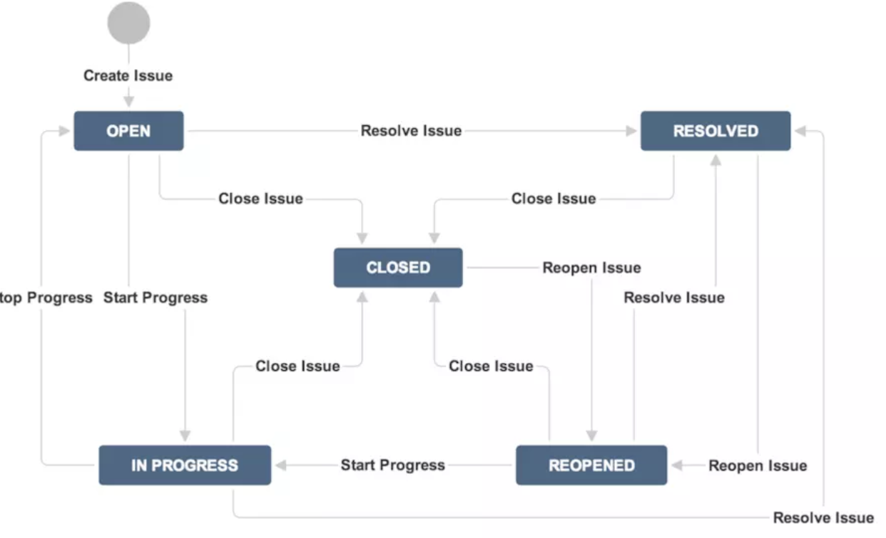
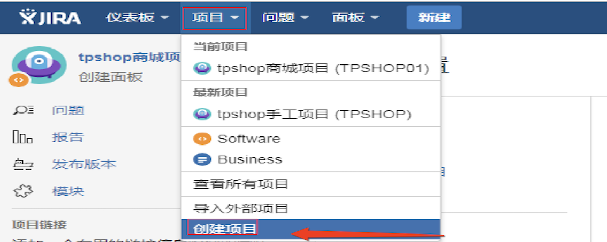
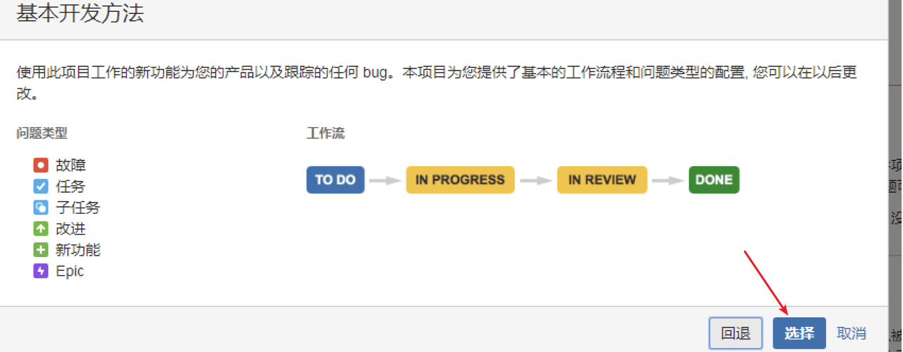
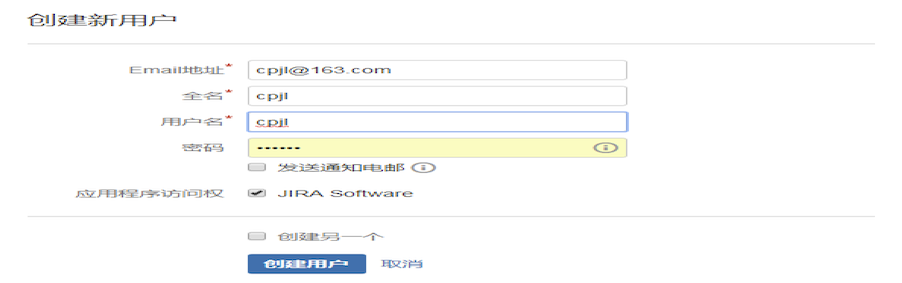
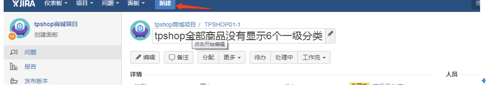
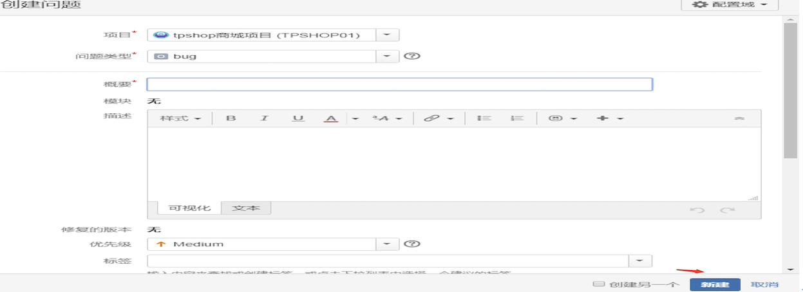

Jira
1. Jira 概述
JIRA 是澳大利亚 Atlassian 公司开发的一款优秀的问题跟踪管理软件工具，可以对各种类型的问题进行跟踪管理，包括缺陷、任务、需求、改进等。JIRA采用J2EE技术，能够跨平台部署。它正被广泛的开源软件组织，以及全球著名的公司使用。
JIRA作为一个专业的问题跟踪系统可以帮助您把缺陷管理起来，让跟踪和管理在项目中发现的问题变得简单，而且充分利用JIRA的灵活配置和扩展特性，可以将JIRA作为一个项目管理系统或者IT支持系统。
JIRA 4.0版本之后，不再按照功能区分版本。取消了以前的标准版，专业版，企业版之分；取而代之的是按照用户数量来划分：25、50、100、无限制用户。 所有的版本都具有之前企业版的功能！JIRA不限制创建项目数和Issue的数量，购买之后可以永久使用；并且一年内免费更新版本
2. Jira中涉及的概念
2.1 Jira的角色
JIRA作为一个缺陷跟踪管理系统，可以被企业管理人员，项目管理人员，开发人员，分析人员，测试人员和其他人员所广泛使用.
- 管理人员:根据JIRA系统提供的数据，更加准确地了解项目的开发质量和状态，以及整个团队的工作效率。
- 项目管理者:可以针对登记进JIRA系统中问题，进行评估，分配缺陷；还可以通过JIRA系统的统计报告了解项目进展情况以及团队的工作量、工作效率等信息。
- 开发人员:在JIRA系统中查看分配给自己的问题，及时进行处理，填写处理情况并提交工作量记录。
- 测试人员:根据测试情况，在JIRA系统中及时快速的记录问题并对开发人员处理后的问题进行验证和跟踪。
2.2 Jira 的问题
在Jira中一切皆问题.使用者根据不同的需求来决定如何使用 jira, 一个问题可以是软件的缺陷，一个项目的具体任务，一个需要解决的技术难题或者是需要审批的报销单据等。
JIRA可以为不同类型的问题单独设置相应的类型。JIRA可以跟踪问题(lssue),这些问题可以是 bug，功能请求或者任何其他想要跟踪的的任务；
每个问题都有一些关联的信息:
| 问题类型(lssue type) | 问题发生的环境 |
|---|---|
| 摘要(summary) | 问题的优先级 |
| 问题描述（description） | 问题的报告者 |
| 问题所属的项目 | 问题的指派处理人 |
| 问题关联的项目组件（component） | 问题的当前状态 |
| 问题影响的项目版本（affect version） | 问题将被解决的项目版本（resolved version） |
(1) 问题类型
JIRA 系统可以用于跟踪多种不同类型的问题。系统管理员可以根据需要添加。JIRA系统默认提供的问题类型如下:
- 缺陷(bug): 测试过程、维护过程发现影响系统运行的缺陷
- 新需求(new feature): 对系统提出新的功能
- 任务(task): 需要完成的任务
- 改进意见(improvement): 对现有系统功能的改进
- Epic:文档
补充：问题类型的含义是每次创建项目任务的时候都需要通过问题类型来创建，通过问题类型来跟踪任务，是配置工作流必须用到的一项
(2) 问题优先级
在 JIRA 系统中用优先级来表示问题的严重级别。系统管理员可以在 JIRA 系统中添加优先级，JIRA 系统缺省的优先级为'紧急'，'严重'，'一般'，'次要'，'无关紧要'5个级别:

补充：创建问题的时候，优先级是个可用到的字段，针对任务问题的级别选择以上优先级。
(3) 问题状态
每个问题有一个状态，用来表明问题所处的阶段，问题通过开始于 open 状态，然后开始可以转移到 In Progress，再到Resolved，然后被Closed。根据情况的不同，您可以根据项目来定制问题状态以及工作流。JIRA 系统提供的缺省状态如下：
| open | 表示问题被提交, 等待有人处理。 |
|---|---|
| In Progress | 问题在处理当中，尚未完成。 |
| Resolved | 问题被解决，等待问题报告人进行验证,问题单一般可以进一步变更为重新打开状态（Reopened）或关闭状态（Closed）。 |
| Reopened | 重新打开, 问题经过验证发现没被解决,问题可以更新到这个状态 |
| Closed | 问题处理结果确认后，置于关闭状态。 |
补充：问题状态主要用到配置workflow里面，在workflow里面用来表示工作流执行的状态，每次配置workflow的时候事先要建立好步骤的每一步状态，可以定义为中文，达到见文知意的效果，如当前步骤是市场部经理审批，此时状态可以定义为市场部经理审批。
(4) 问题解决方式
一个问题可以用多种方式解决，系统管理员是可以在 JIRA 系统中定制解决方式。JIRA系统默认的解决方式如下:
| Fixed | 问题已经解决 |
|---|---|
| Won't Fix | 不用修复, 例如这个问题所描述的现象已不再有影响了。 |
| Duplicate | 重复的问题。推荐把相关的单子链接起来. |
| Incomplete | 问题描述的不够准确,安全. |
| Cannot Reproduce | 问题重现失败，或者无足够的信息重现问题 |
补充：创建问题和解决的时候，解决是个可用到的字段，和优先级相像，针对任务问题的执行情况选择解决的结果
2.3 项目
JIRA的项目是根据你的企业组织需要定制的，是 问题的集合. 例如一个JIRA项目可以是一个软件开发项目、一个市场推广活动等等.
每个 问题 必须属于一个项目。 每个项目都有 项目名称 以及 一个 项目关键字。 项目关键字是项目中所有 问题编号的前缀，例如 WEB-101, WEB-102, 等.
值得注意的是，在 JIRA 系统中有一个权限‘Administer Projects’，通常将这个权限赋给项目负责人，拥有这个权限的 JIRA 用户就可以管理项目的‘版本’和‘组件’。
(1) 组件
组件是项目中的问题单一种逻辑分组.一个项目根据组织的需要可能会包括多种组件, 在一个项目中，一个问题单可以归属于0到多个组件。
例如, 一个软件研发项目可以设置'文档','邮件系统','用户界面'等模块。一个网页设计项目可以设置'产品','联系我们','专业服务'等模块.
(2) 版本
在一个项目上，一般会有多个版本，如：1.0alpha、1.0beta、1.0、1.2、2.0.
JIRA 系统中的问题涉及到两个版本字段：
影响版本— 可以清晰地反映出这个问题在哪个版本中出现错误。例如, 一个软件的缺陷可能影响了产品的1.1和1.2版。
修复版本— 可以反映出报告的问题将在哪个版本，或已经在哪个版本中修复了。例如, 软件缺陷影响了产品的1.1和1.2版，这个缺陷已经在2.0版中修复了。注意没有修复版本的问题会被归类到'未规划'。
版本可以有3个状态: 已发布,未发布或已归档。版本可以设置发布日期,而JIRA会自动将到期而还没有发布的版本高亮显示出来，并标注上'超期'标志。
2.4 工作流(workflow)
工作流 是按照一定的规则和过程执行一个任务，在JIRA中体现在问题在生命周期内不同 状态 之间的变化。
下面的图像是JIAR默认的工作流程:
- 每个 状态 以矩形框表示
- 每个 工作流跳转 由箭头指引方向。

3. Jira的使用
可以根据需求创建不同角色,由不同角色人员登录进行操作.但是首先要使用管理员账号登录、创建项目、创建角色等进行基础的设置.
3.1 创建项目
使用安装Jira时创建的管理员进行登录, 进行创建项目, 流程如下:点击项目—〉 创建项目—〉 选择基本开发方法—〉 输入项目名称和关键字,点击提交


3.2 创建角色
创建角色还是要以管理员的账号登录,然后进行角色创建,流程:在页面首页的设置点击用户管理 —〉 点击创建用户 —〉 填写创建新用户,然后创建

3.3 创建问题
可以使用不同角色创建问题,此处我们以测试角色为例.使用测试的角色登录,点击创建 —〉 填写对应的描述信息—〉 点击创建


补充:
- 测试人员创建问题后,问题的状态是待办,同时指定问题的解决人,例如直接指定开发解决
- 指定问题的解决人员,将问题指定给开发人员
- 开发人员登录自己的账号,可以看到指派给自己的问题,修改问题的状态,修改为In Progress
- 开发修改问题后,再次提交问题
- 测试人员登录后,看到再次提交的问题,对问题进行评审,评审通过后状态为closed
- 若测试未通过,问题再次指派给相关开发人员,状态为reopened
4. 小结
JIRA是集项目计划、任务分配、需求管理、缺陷跟踪于一体的软件。它基于Java架构的管理系统，被广泛应用于缺陷跟踪、客户服务、需求收集、流程审批、任务跟踪、项目跟踪和敏捷管理等工作领域。
JIRA创建的问题类型包括New Feature（新功能）、Bug（缺陷）、Task（任务）和Improvement（改进）四种，还可以自定义，所以它也是一个过程管理系统。同时融合了项目管理、任务管理和缺陷管理
JIRA设计以项目为主线，产品、测试结合管理，通过issues控制管理。因此它的核心诉求还是围绕issue展开的，以issue驱动管理、分工、以及团队协作，进而实现项目的规划、建设，终完成产品开发。
JIRA的优点:
- JIRA的界面效果非常不错。安全性、可扩展性方面也不错。 JIRA的使用范围广，所以拥有众多开发者提供的扩展插件以供不同选择。
- 单独提一下JIRA的工作流定制，这块功能实用性特别高，可定制性也很好。
- JIRA针对issue驱动的项目管理非常有效，也基于多年来的插件积累，可以展现非常强大的交互、统计视图，纯粹项目管理使用JIRA的确是个不错选择。
缺点:
- jira不符合国内人的使用习惯并且汉化做的不好
- 售后服务较弱
- 价格与禅道相比,较贵